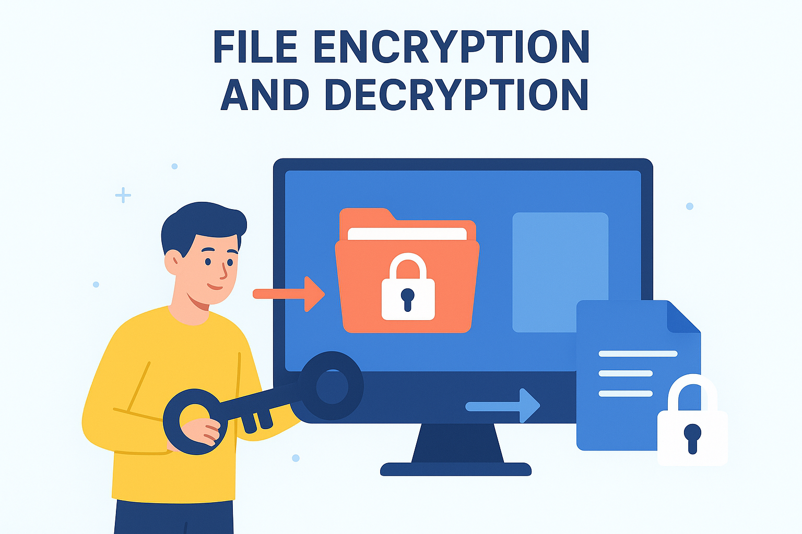

Mr. Vikas
Cyber Security Intern
Hi, I'm a Cybersecurity intern with hands-on experience in SIEM (Wazuh), log monitoring, and vulnerability assessment. Strong background in web development, Python scripting, and penetration testing.
Work Experience
Oct 2025
Cyber Security Analyst , BISAG
Handling vulnerability assessments, penetration testing, SIEM monitoring, log analysis, and incident response to strengthen organizational cybersecurity.
Jan 2025 - Sept 2025
Cyber Security Intern
Gained hands-on experience in vulnerability assessment, penetration testing, SIEM monitoring, and incident detection.
Jan 2025 - July 2025
Computer Teacher
Computer Teacher DAV Police Public School, Nuh Taught computer fundamentals and programming basics, enhancing students’ technical skills and problem-solving through interactive learning.
Education
2020 - 2024
B.Tech (Computer Science and Engineering)
Completed B.Tech in Computer Science at Gurugram University, securing 79.77% marks, with focus on cybersecurity and development.
2020
12th Class
Completed 12th from Hindu Senior Secondary School, Nuh, achieved 82.6% marks, with focus on Mathematics, Chemistry, Physics, Hindi and English subjects.
2018
10th Class
Completed 10th at Hindu Senior Secondary School, Nuh, secured 79.4% marks, with strong performance in Mathematics, Science, Social Science, Hindi, English and Drawing.
My Services
Web Testing
Identify and exploit vulnerabilities to strengthen web applications and systems.
Read MoreCybersecurity Analysis
Monitor security logs, detect threats, and analyze incidents in real time.
Read MoreWeb Development
Build secure, responsive, and user-friendly websites using modern technologies.
Read MorePython Scripting
Automate security tasks and develop tools for efficient cybersecurity operations.
Read MoreMy Skills
Cybersecurity & Tools
Kali Linux
Burp Suite
Nmap
Wireshark
Programming
Python
Java
PHP
Web Technology
HTML
CSS
JS
BootStrap
SIEM & SOC
Wazuh
Project 1
1. Web Control (Remote System Monitoring)
Tech Used:Python & Web Development
Developed a Python-based remote system monitoring tool enabling secure control and surveillance of multiple client machines via a web interface. Features include real-time process management, network monitoring, disk usage tracking, and command execution. Implemented robust error handling, authentication, and logging to ensure secure remote access for ethical and administrative purposes.
Project-2
2. Portfolio Book
Tech Used:Python & Web Development
Created a dynamic personal portfolio web application to showcase projects, skills, and achievements. Built using HTML, CSS, and JavaScript for responsive design and seamless navigation. Integrated project sections, interactive elements, and contact forms to provide an engaging user experience. The portfolio highlights professional work, certifications, and technical competencies in an organized, visually appealing format.
Project-3

3. File Encryption and Decryption
Tech Used:Python & AES Encryption
Developed a Python tool for encrypting and decrypting sensitive files using symmetric key cryptography (Fernet/AES). The project ensures secure storage and transfer of confidential data with features like automatic key generation, file integrity checks, and error handling. Designed as a command-line application, it demonstrates practical encryption practices and emphasizes data confidentiality and cybersecurity awareness.